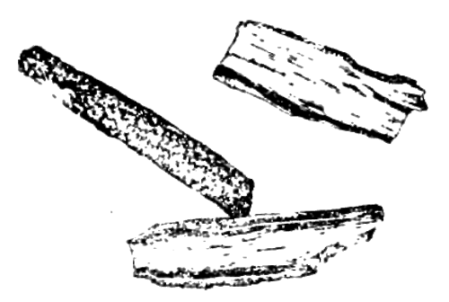
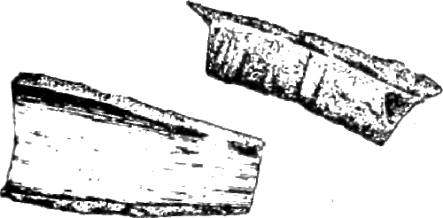

Корица

Кора нескольких видов коричных деревьев семейства лавровых, используемая как пряность в высушенном виде. Наиболее известны следующие четыре вида.
Цейлонская корица (Cinnamomum zeylanicum Br.)
Синонимы: кинамон, благородная корица, настоящая корица.
Родина — Цейлон. Культивируется в Индии, Индонезии, Малайзии, Бразилии, Гвиане (Фр.).
Насаждения цейлонской корицы представляют собой кустарники, с однолетних — трехлетних побегов которых дважды в году снимают кору: после периода дождей, когда кора снимается легче и делается более ароматной.
Снимают кору полосками длиной 30, шириной 1 — 2 сантиметра и, соскоблив с нее верхнюю кожицу, сушат в тени, в результате чего корица приобретает желто-коричневый или светло-коричневый цвет наружной поверхности и более темноватый цвет внутренней поверхности и свертывается в трубочки. Толщина цейлонской корицы после сушки едва достигает 1 миллиметра. Лучшие сорта по толщине почти ничем не отличаются от писчей бумаги. Эта корица чрезвычайно ломка. Аромат ее очень нежен. Вкус сладковатый, слегка жгучий, согревающий.

Китайская корица (Cinnamomum Cassia В1.)
Синонимы: ароматная корица, индийская корица, простая корица, кассия, кассия-канель.

Родина — Южный Китай. Культивируется в Китае, Камбодже, Лаосе, Индонезии. Кору срезают со стволов и ветвей деревьев один раз в 8— 10 лет полосками разной длины (до 10—15 сантиметров), шириной 1—2 сантиметра и сушат в тени. Готовая корица представляет собой грубоватые обломки коры, слегка вогнутые, имеющие шероховатую внешнюю поверхность красновато-коричневого цвета с серо-коричневыми пятнами и более гладкую внутреннюю поверхность ровного коричневого цвета. Толщина китайской корицы — от 2 миллиметров и более. Вкус, выраженный ароматичный, значительно более резкий, чем у цейлонской корицы, сладковатый, терпко-вяжущий, слегка жгучий.
Малабарская корица (Cinnamomum Tamala Nees)
Синонимы: коричное дерево, бурая корица, древесная корица, кассия-вера.
Родина—Юго-Западная Индия. Растет в Индии и Бирме. По внешнему виду еще более грубая, чем кора китайской корицы, неровного (грязного) темно-бурого оттенка, значительно менее ароматная по запаху, чем предыдущие сорта. Толщина ее — до 3 миллиметров и более, вкус — резко вяжущий, с оттенком горечи.
Циннамон, или пряная корица (Cinnamomum Culilawan Bl.)
Родина — Молуккские острова. Культивируется в Индонезии. Кора молодых (однолетних) побегов кустарника циннамона. В сухом виде представляет собой маленькие кусочки (1—2 сантиметра) тонкой коры беловато-бежевого снаружи и желто-красного цвета внутри. Аромат — остро-пряный, вкус — пряно-жгучий.
* * *Разные виды корицы употребляются главным образом в кондитерском производстве (в печенье, кексы, куличи, пряники, сладкие пироги с фруктовой начинкой), а в кулинарии — при приготовлении сладких блюд (пудинги, сладкие пловы, компоты, варенья, муссы, желе, кисели, творожные пасты).
В современной западноевропейской кухне корицу широко применяют в различные виды фруктовых салатов и в некоторые овощные (шпинат, красная капуста, кукуруза молочновосковой спелости, морковь), а также в холодные фруктовые супы из свежих и сушеных фруктов. Особенно хорошо сочетается корица с теми блюдами, в состав которых входят яблоки.
В восточной кухне, в том числе и в нашей закавказской и среднеазиатской, корица употребляется при приготовлении холодных и горячих блюд из домашней птицы (индейка, курица) и вторых блюд из баранины (жареной, тушеной), а в Китае и Корее — при приготовлении жареной свинины. Корица улучшает, облагораживает вкус жирного мяса.
Наконец, корица — обязательный компонент различных смесей сухих пряностей и смесей для фруктовых, грибных и мясных маринадов.
Корицу употребляют либо в целом виде (жидкие блюда), либо чаще — в молотом (особенно в салаты, вторые блюда). Закладку производят за 7—10 минут до готовности блюда (супы, компоты, горячие блюда) или непосредственно перед подачей на стол (салаты, творожные пасты, простокваша).
Нормы закладки корицы сильно колеблются. Особенно они высоки в восточной, индийской и китайской кухнях; в среднем — от 0,5 до 1 чайной ложки на 1 килограмм риса, творога, мяса, теста или на 1 литр жидкости.
В качестве заменителей корицы, разумеется, худших по качеству, применяют незрелые высушенные плоды — семена коричных деревьев (шарики размером с горох, серо-коричневого цвета с более резким, чем у корицы, запахом и жестким, неприятным вкусом), а также искусственный заменитель — коричный экстракт.